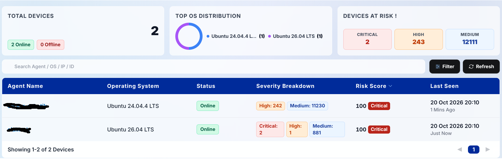
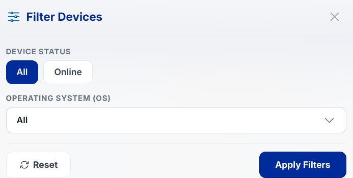
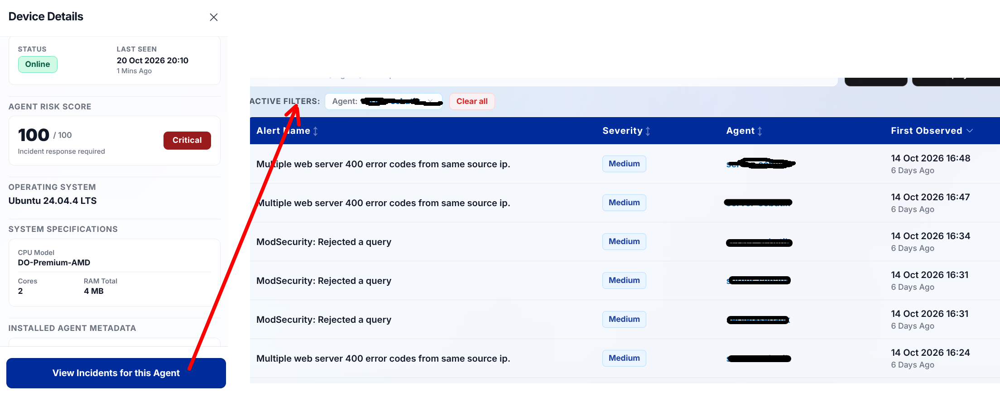

Devices
The Devices page delivers an exhaustive catalog of monitored endpoint assets. Security personnel can audit connection statuses, hardware capabilities, and operating system distributions to maintain full asset governance across the network.

5.1. Total Devices Widget
- Total Devices: Aggregate count of all endpoints officially registered within the tenant scope.
- Online: Count of endpoints actively sending heartbeat signals and security logs in real time.
- Offline: Count of endpoints currently unreachable, powered down, or suffering network disconnects.
5.2. Top OS Distribution
Donut and bar charts visualising the distribution of operating systems across your server and workstation fleet (e.g., Ubuntu Linux, Windows Server 2022, Debian, Windows 11, macOS).
5.3. Device at Risk Widget & Inventory Table
Device at Risk Widget: Three summary stat cards tabulating the accumulated count of Critical, High, and Medium alerts across all registered machines.
Inventory Table Columns:
- Agent Name: Endpoint hostname or machine identification label.
- Operating System: Installed platform flavor and kernel/build release.
- Status: Live connection health (Online or Offline).
- Severity Breakdown: Distribution badges for active alerts on that machine (Critical, High, and Medium).
- Risk Score: Individual machine risk rating (0 - 100) alongside category level (Low, Medium, High, Critical).
- Last Seen: Timestamp of the most recent telemetry heartbeat received from the agent.

Filter Controls: Allows isolating endpoints based on operational status (Online/Offline) or specific operating system platforms.
5.4. Device Detail Drawer
Clicking on any endpoint row slides out a comprehensive asset drawer detailing:

- Agent Name: Full hostname identifier.
- Agent ID & Agent IP: Two-column grid displaying Wazuh registration ID and host IP address.
- Status & Last Seen: Real-time connection badge and most recent observation time.
- Agent Risk Score: Computed device risk score value (0 - 100).
- Operating System: Complete platform distribution name.
- System Specifications: Hardware profile including processor model, total CPU cores, and installed RAM capacity.
- Installed Agent Metadata: Wazuh agent binary version, registered server IP, and initial enrollment date.
- Detected Issues: Displays up to 5 of the latest unique alert types triggered by the endpoint.
- "View Incidents for this Agent" Button: Action button at the drawer base that transitions directly to the Incidents module with pre-applied filters isolating alerts for this host.